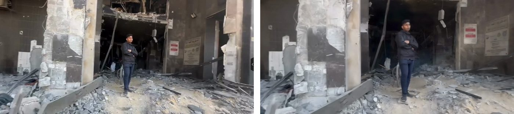
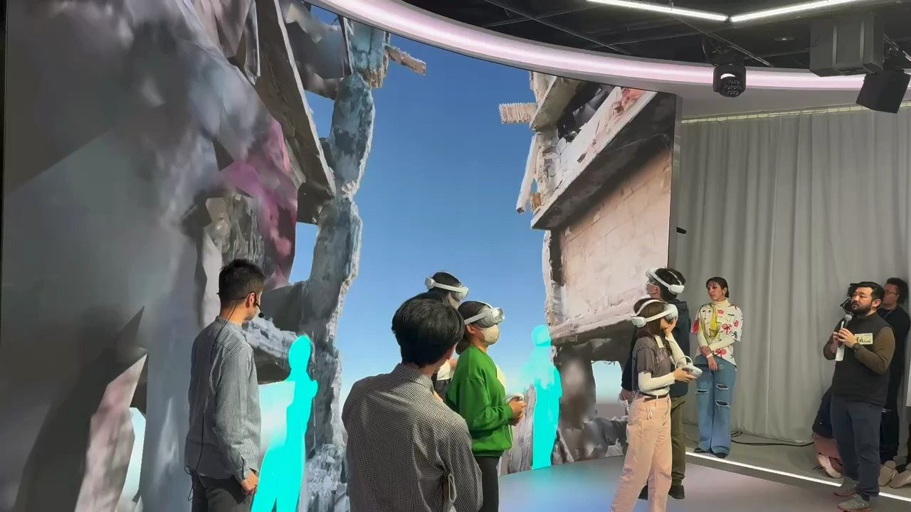
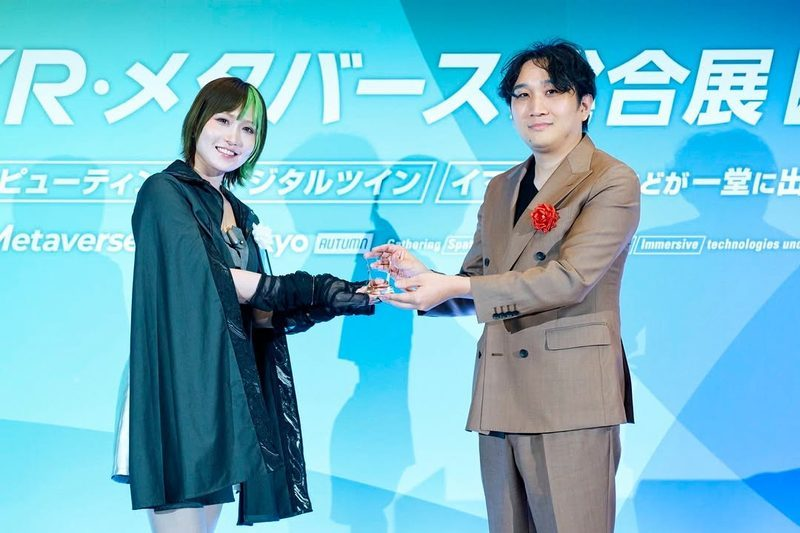

Affiliation
東京大学大学院 情報学環
渡邉英徳研究室
渡邉英徳研究室
Role
研究開発統括
体験設計・開発
体験設計・開発
Period
2023 — Present
Awards
日テレイマジナリウムアワード2023 XR部門大賞
JAPAN Metaverse Awards 2025 ベストプロトタイプ賞
JAPAN Metaverse Awards 2025 ベストプロトタイプ賞
概要
戦災VRは、戦災の写真や3Dデータの中を、来場者が3Dスキャンした自分のアバターで歩けるVRです。 写真に地面や歩ける範囲を設定して奥行きのある空間にし、その中に自分の身体を置くことで、 写真を外から見るだけでなく、その場所にいる視点から当時の状況を考えられるようにしています。
広島・長崎の戦災写真に加えて、ウクライナやガザの3Dデータ、報道映像から生成した空間も扱っています。
制作工程
- 01
写真を立体にする
戦災写真に地面・歩ける範囲・遮蔽物を設定し、2Dの写真を奥行きのある空間にします（Unity）。
- 02
自分の身体を入れる
AVATARIUM（PocketRD）で来場者を3Dスキャンし、本人のアバターとして写真の中を歩けるようにします。
- 03
映像から3D空間へ
アルジャジーラとの共同開発（東京大学大学院情報学環 メディア・コンテンツ総合研究機構とアルジャジーラ・メディア・ネットワークのMOUに基づく）では、数秒の報道映像から3D Gaussian Splattingで空間を生成し、映像に映っていない建物の奥まで歩いて入れるようにしています。
- 04
複数人で同じ場所へ
3D Tiles／Cesium for Unityで地図上に配置した空間に、複数人がアバターで集まれるようにしています。




展示
- 2026NPT再検討会議に合わせた展示（日本生協連・東京大学大学院 渡邉英徳研究室）ミレニアムヒルトン・ニューヨーク・ワン UN プラザ
- 2026ミライの平和活動展 in 長崎 〜テクノロジーでつながる世界〜長崎原爆資料館・ベネックス長崎ブリックホール
- 2025特別展「つなぐ、つながる」（渡邉英徳研究室）大阪・関西万博 国際連合パビリオン
- 2025ミライの平和活動展 in 長崎（来場者のアバターが映画『長崎―閃光の影で―』の場面や戦時写真に入り込む展示）長崎原爆資料館
- 2024ミライの平和活動展 in 長崎長崎市役所
- 2023–24東京都現代美術館「MOTアニュアル extra」（日テレイマジナリウムアワード2023 XR部門大賞受賞作として）東京都現代美術館
- 2023ミライの平和活動展〜テクノロジーでつながる世界〜広島テレビ本社
- 2023IVS2023 Kyotoみやこめっせ京都
受賞
- 2025JAPAN Metaverse Awards 2025 ベストプロトタイプ賞（平和構築メタバース 戦災VR）
- 2023日テレイマジナリウムアワード2023 XR部門大賞
メディア
- 2026読売新聞 特集「戦後81年」
- 2025–26港区「みなとNEWS」（港区平和青年団の講座での戦災VRの講義）
- 2024–NHK Eテレ「科学の扉、開けちゃいました。～理系東大生のステキな好奇心～」
- 2024Distance Media「〈東大・渡邉英徳教授に聴く〉テクノロジーで、体験していない戦争の記憶を継承できるのか？」
- 2024毎日新聞 東京版
- 2023NHKスペシャル「Z世代と"戦争"」
- 2023NHK「ニュースLIVE！ゆう5時」
論文・発表
- 2025国際シンポジウム「Beyond the Headlines」パネル「戦災とデジタルアーカイブ」登壇（東京大学 情報学環・福武ホール）
- 2024小松尚平, 渡邉英徳「「戦災写真内を歩行可能なアバター・フレームシステム」の実展示」デジタルアーカイブ学会誌, Vol.8, No.1, pp.21-24（招待）
- 2023小松尚平, 渡邉英徳「3D Tilesを用いた戦災VRシステムの開発」第28回日本バーチャルリアリティ学会大会論文集